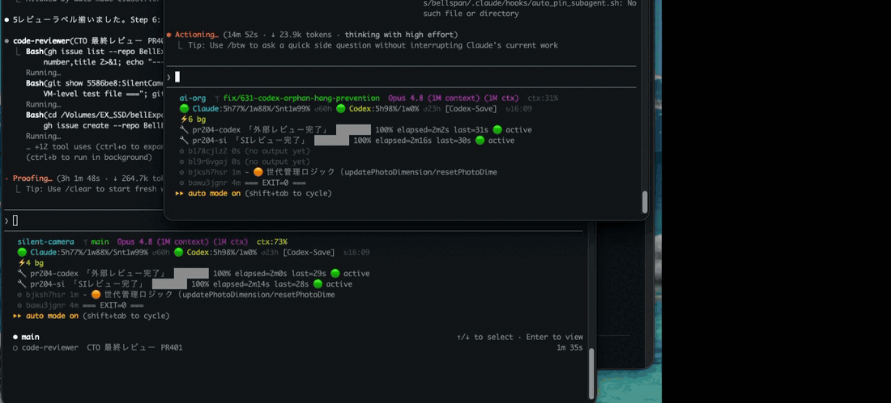

ai-usage-monitor
Claude Code と Codex（OpenAI）のサブスク使用量をリアルタイムに可視化し、残量に応じて「どちらに仕事を振るか」を自動提案する macOS 常駐ツール。
Claude Code の statusLine（ターミナル最下部）と SwiftBar（メニューバー）に、5h・週次の残量％、トークン数・コスト、実行中のバックグラウンドジョブの進捗を常時表示する。

ai-org ᛘ main Sonnet 4.6 (200k ctx) ctx:32%
🟢 Claude:5h89%/1w90%/Snt1w86% 🟢 Codex:5h99%/1w99% [Balanced +2%] ↻12:05
⚡3 bg ⏳ CI 3/5 passing
🔧 ri-pr42 「RI レビュー」 ████░░░░ 50% elapsed=12s last=3s 🟢 active
⚙ bui49k40l 8s npm test passing 12/30 ...macOS 専用 —date -v/date -r（BSD date）・id -u形式・launchd を使用しており、Linux / Windows では動作しません。
なぜ作ったか
Claude Code（Max プラン）と Codex（Plus プラン）を併用していると、次の課題が日常的に起きる。
- 使用量が見えない。「このタスクを重い Claude に投げて 5h 枠を使い切って大丈夫か？」が判断できない。Web 管理画面を毎回見るのは非現実的。
- どちらに振るべきか分からない。Claude が枯渇気味なら調査・要約は Codex に回したい。だが残量を把握していないと「止まってから気づく」。
- バックグラウンドの仕事が見えない。subagent やビルド・テストを並列で走らせると「動いているのか・スタックしているのか」分からない。
このツールは 「残量」と「進行中の仕事」を常に視界に入れることで、これらを解決する。判断のための情報を、判断する場所（ターミナル）に置く。
主な機能
| 機能 | 説明 |
|---|---|
| 使用量の常時表示 | Claude（5h / 週次全モデル / 週次 Sonnet）と Codex（5h / 週次）の残量％を statusLine・メニューバーに表示 |
| ルーティング自動提案 | 残量に応じて Balanced / Codex-First / Claude-First / Codex-Save / Save-Claude 等を算出し「今はどちらに振るべきか」を示す |
| バックグラウンド進捗 | 実行中の subagent / bash ジョブを 1タスク1行で表示。進捗バー・経過時間・スタック検知・作業内容スニペット付き |
| 任意ジョブの進捗注入 | bg-status.sh で CI/E2E/ビルド等の進捗を statusLine に流せる（job 別・複数同時） |
| コスト・トークン可視化 | ccusage 連携で 7日 / 当日のトークン数・コストを表示（SwiftBar） |
| アイドル中も更新 | refreshInterval 対応で、バックグラウンドジョブ待ちの間も statusLine が定期更新される |
アーキテクチャ
「データ収集」と「表示」を分離し、収集は 5 分ごとに launchd が キャッシュファイルへ書き、各表示先はキャッシュを読むだけにしている。表示のたびに API を叩かないので軽量で、API quota も消費しない。
データソース 収集 (launchd 5分毎) 表示
───────────────── ────────────────── ─────────────────────────
Anthropic OAuth API ─┐
(5h / 週次 残量%) │
├─→ cache-update.sh ─→ cache ─┬─→ statusline.sh (Claude Code)
ccusage (JSONL) ─┤ (KV file へ) ├─→ ai_usage.5m.sh (SwiftBar)
(トークン/コスト) │ └─→ session-start (hook)
~/.codex/sessions ───┘
(rate_limits)
subagent / bash job ─→ ai-org-progress / bg-status.sh ─→ 状態ファイル ─→ statusline の 🔧/⏳/⚙ 行- 収集（
cache-update.sh）: launchd が 5 分ごとに起動。OAuth API・ccusage・Codex セッション JSONL を読み、$DARWIN_USER_TEMP_DIR/ai-usage-monitor/cacheにKEY=VALUEで書く。 - 表示: statusLine / SwiftBar / SessionStart hook はキャッシュを
sourceして読むだけ（高速・API 非依存）。 - 進捗は別系統: バックグラウンド進捗は
/tmp/ai-org-progress/（subagent 用）と~/.claude/bg_status/（任意ジョブ用）の状態ファイルを statusLine が直接読む。こちらはリアルタイム。
表示の詳細
1. Claude Code statusLine（複数行）
ai-org ᛘ main Sonnet 4.6 (200k ctx) ctx:32%
🟢 Claude:5h89%/1w90%/Snt1w86% 🟢 Codex:5h99%/1w99% [Balanced +2%] ↻12:05
⚡3 bg ⏳ CI 3/5 passing
🔧 ri-pr42 「RI レビュー」 ████░░░░ 50% elapsed=12s last=3s 🟢 active
⚙ bui49k40l 8s npm test passing 12/30 ...| 表示 | 意味 |
|---|---|
ai-org ᛘ main | リポジトリ名・現在のブランチ |
Sonnet 4.6 (200k ctx) | 使用中のモデルとコンテキストウィンドウサイズ |
ctx:32% | コンテキスト使用率（50%+ 黄 / 80%+ 赤 / 100%+ dim） |
🟢 Claude:5h89%/1w90%/Snt1w86% | Claude 5h残 / 週次全モデル残 / 週次 Sonnet残（🟢≥30% 🟡<30% 🔴<10%） |
🟢 Codex:5h99%/1w99% | Codex 5h残 / 週次残（🟢≥50% 🟡<50% 🔴<20%） |
[Balanced +2%] | ルーティングモードとバランスギャップ |
↻12:05 | キャッシュ最終更新時刻 |
⚡N bg | バックグラウンドタスク数（= 以下の行数と一致） |
⏳ <msg> · <msg> | bg-status.sh で流した任意ジョブの進捗（新鮮な間だけ集約表示） |
🔧 <id>「ラベル」<バー> % | 進捗報告ジョブ（subagent / ai-org-progress）を 1 行ずつ |
⚙ <id> <経過> <出力> | 進捗を持たない bash background を 1 行ずつ（最新出力行をスニペット表示） |
2. SwiftBar メニューバー
🟢 Claude 89%/週90%/Sonnet86% | 🟢 Codex 99%/週99%クリックでドロップダウン:
Claude (Max 20x)
セッション(5h) 残89% (11%使用)
週次 全モデル 残90% (10%使用)
週次 Sonnetのみ 残86% (14%使用)
7d 2.1G tokens / $0.00
──────────────────────────────
Codex (Plus)
5h窓 🟢 残り 99% リセット: 14:30
週次 🟢 残り 99% リセット: 05/19
──────────────────────────────
🟢 [Balanced]
──────────────────────────────
最終更新: 12:05
今すぐ更新3. SessionStart フック
セッション開始時に使用量サマリとルーティング指針を表示する。
[AI使用量司令塔] 🟢 [Balanced]
Claude 5h:残89% 週:残90% Sonnet週:残86%
Codex 5h:残99% 週:残99%statusLine の仕組み（Claude Code 連携）
Claude Code の statusLine は「任意のシェルスクリプトを実行し、その標準出力を最下部に表示する」機能。スクリプトには stdin で JSON（モデル名・コンテキスト使用率・workspace パス等）が渡る。
- 複数行対応: スクリプトが複数行を出力すると、各行がそのまま行として表示される。本ツールはこれを利用して「bg タスクを 1 タスク 1 行」で見せている。
- 更新タイミング: 標準ではイベント駆動（アシスタントの新メッセージ後・300ms デバウンス）。バックグラウンドジョブ待ちでアイドルになると更新が止まるため、
refreshInterval（秒・最小 1）を設定して定期更新させる。 - キーは camelCase:
"statusLine"。"statusline"（小文字）では読まれない。
// ~/.claude/settings.json
"statusLine": {
"type": "command",
"command": "/path/to/ai-usage-monitor/scripts/statusline.sh",
"refreshInterval": 2,
"padding": 1
}バックグラウンドジョブ進捗の注入（bg-status.sh）
長時間のバックグラウンドジョブ（CI/E2E 監視・ビルド・テスト）から進捗を statusLine に流せる。job ごとに key を付けて複数同時表示できる。
scripts/bg-status.sh set ci "CI 3/5 passing" # job key = ci
scripts/bg-status.sh set e2e "E2E 2/4" # job key = e2e
# → statusLine に「⏳ CI 3/5 passing · E2E 2/4」
scripts/bg-status.sh set "building app" # key 省略 = default key（後方互換）
scripts/bg-status.sh clear ci # ci job のみ消す
scripts/bg-status.sh clear # 全 job を消す| 特性 | 内容 |
|---|---|
| job 別・複数同時 | key ごとに別ファイルで管理するため、複数ジョブが同時に書いても競合しない |
| プロジェクトスコープ | cwd の git リポジトリルートごとに分かれ、別リポジトリのセッションに進捗が漏れない |
| 自動失効 | CLAUDE_BG_STATUS_FRESH_SECS（既定 600 秒）超の進捗は自動で非表示・ファイルも reap |
| 安全 | 表示時に ANSI エスケープ・制御文字を除去（statusLine への注入・表示崩れを防止）。key はファイル名にサニタイズされパストラバーサル不可 |
| atomic 書き込み | mktemp → mv で、statusLine が読む瞬間の空・部分表示を防ぐ |
環境変数: CLAUDE_BG_STATUS_DIR（基底ディレクトリ）/ CLAUDE_BG_STATUS_FRESH_SECS（新鮮判定秒）/ CLAUDE_BG_STATUS_MAX_JOBS（同時表示上限・既定 3・超過は +N）/ CLAUDE_BG_STATUS_MAX_CHARS（表示最大文字数・既定 200）。
進捗の数字はどう作っているか（と、その限界）
statusLine の 60% や ████░░░░、1/3 といった進捗は 自動計測ではなく、呼び出し側（エージェント）の自己申告で成り立っている。設計上の割り切りと限界を明記する。
数字の出どころ
ai-org-progress write <id> <current> <total> "<label>"current（今いくつ）と total（全部でいくつ）を呼び出し側が渡す。subagent を dispatch する際にプロンプトへ「進捗 pin」を埋め込み、マイルストーン到達時にエージェント自身が書き込む（enforce_subagent_progress フックが pin 無し dispatch を弾く）。
ai-org-progress write ri-pr48 1 3 "差分読み込み"
ai-org-progress write ri-pr48 2 3 "レビュー投稿"
ai-org-progress write ri-pr48 3 3 "判定"表示される数字はこの JSON（{current,total,label,started,updated,parent}）と時刻から算出する。
| 表示 | 計算 |
|---|---|
60% | current / total × 100 |
████░░░░ | current / total × 幅 ブロック |
elapsed=2s | now − started |
last=2s | now − updated（最後の write からの経過） |
🟢 active / ⚠️ stuck? | now − updated が 90 秒以内なら active / 超で stuck |
| 親（root）の集約値 | 子孫の current/total を合算 |
つまり数字の正体は「エージェントが宣言したステップ番号（self-reported milestone）」であり、実作業量を測ったものではない。
進捗を「数字」にしにくいタスク
| 類型 | 例 | なぜ % が嘘になるか |
|---|---|---|
| 探索・調査 | バグ原因特定・コード探索 | 終わるまで「あと何ステップか」が分からず total を決められない |
| 長い単一処理 | xcodebuild / ffmpeg / 大きな test run | 中身が 1 ステップで 0/1 → 1/1 しか刻めない |
| 待ち | CI 完了待ち・deploy 待ち | 進捗が線形でない |
| 品質・創作 | コピーを書く・設計を練る | 自然な単位がない |
これらを無理に milestone 化すると total=2「読込/判定」のように恣意的になり、% は実態を測らなくなる。
「% に固執しない」2 モード
(1) indeterminate（不定）モード — total=0 で書くと % を出さず cur/? 表示になる。数を諦めてラベルを heartbeat 更新する。
ai-org-progress write dbg 0 0 "原因調査中: AVAudioSession 周辺"
ai-org-progress write dbg 0 0 "原因特定: setActive の順序"→ 数字の代わりに last=Xs（最終更新からの経過）と 🟢 active / ⚠️ stuck?（生死）が「ちゃんと動いている」を伝える。
(2) output-tail モード（⚙ 行） — run_in_background の長い処理は % を出さず、.output の最新行をそのままスニペット表示する。ログ自体が進捗を語るタスク（ビルド・テスト・ダウンロード）はこれが最も正直。
⚙ b8a8262ps 0s ビルド中: モジュール 6/8 をコンパイル...設計方針
多くのタスクで「%」は間違った抽象。「今なにをしているか（label / ログ末尾）」＋「生きているか（last / stuck）」の方が、嘘がなく実用的。
milestone % が向くのは「ステップ数が事前に確定できる定型タスク」（PR レビューの RI→SI→BCI→… 等）だけ。それ以外は indeterminate か output-tail に倒すのが正解。
残る穴（正直に）
長い単一処理が無申告・無出力だと、90 秒で ⚠️ stuck? の誤判定が出る（本当は動いている）。回避策は「定期 heartbeat を書く」か「run_in_background で走らせてログ末尾を ⚙ で見せる」。完全自動の「真の進捗推定」は持っていない（原理的に持てない領域）。
ルーティングモード
残量から「どちらに振るべきか」を cache-update.sh が自動算出する（statusline.sh がラベル表示）。判定の核は バランスギャップ（Claude週次残% − Codex週次残%）だが、その手前に Claude 保護・Codex 保護・Burn（使い切れない余剰の積極消費） が優先される。下表は上から優先で評価される。
| モード | ラベル | 条件（上から優先評価） | 指針 |
|---|---|---|---|
| claude_critical | 🚨 [Claude-Critical] | Claude 週次残 < 危機閾値 | 緊急。全力で Codex へ逃がす |
| save_claude | ⚠️ [Save-Claude] | Claude 週次残 < 温存閾値 | Codex 最大活用で Claude を温存 |
| protect_codex | [Codex-Save] | Codex 5h残 < 20% または 週次残 < 動的閾値 | Codex 枯渇 → Claude を維持 |
| codex_burn | 🔥 [Burn-Codex] | Codex に使い切れない余剰・Claude は余剰なし | Codex を積極消費 |
| claude_burn | 🔥 [Burn-Claude] | Claude に余剰・Codex は余剰なし | Claude を積極消費 |
| codex_first | [Codex-First +N%] | ギャップ > +10%（Claude の方が余裕） | 調査・レビューは Codex へ |
| claude_first | [Claude-First +N%] | ギャップ < −10%（Codex の方が余裕） | Claude 優先 |
| normal | [Balanced +N%] | ギャップ ±10% 以内 | バランス（タスク種別で振る） |
動的閾値: Claude 保護閾値（危機/温存）は リセットまでの残り時間でスケール（threshold = base × hours_until_reset / 168、危機 base=5% / 温存 base=15%）。リセット直前なら多少残量が少なくても問題なし、遠いほど厳しく保護。Codex 週次閾値もリセットまで 24h/48h/それ以上で 3% / 5% / 10% と動的。
Burn 検出: 残量% − (リセットまで時間 × 推定消費 20%/day) がリセット後も 25% 以上残る見込みなら「使い切れない余剰」と判断し、その枠を積極消費するモードに倒す。
+N% はバランスギャップ。Codex データが stale/取得失敗のときはギャップ 0 扱いで誤ルーティングを防ぐ。セットアップ
git clone https://github.com/BellExpan/ai-usage-monitor.git
cd ai-usage-monitor
bash scripts/setup.shsetup.sh が自動でやること:
- スクリプトへの実行権限付与
- launchd 登録（5 分ごとにキャッシュ更新）
- SwiftBar プラグインのシンボリックリンク作成
- Claude Code の SessionStart フックへの登録
- 旧バージョンキャッシュの削除・移行 / 権限ドリフト修復 / 初回キャッシュ生成
手動で必要な設定（statusLine）
statusLine だけは ~/.claude/settings.json への手動追記が必要（理由は次節）。
"statusLine": {
"type": "command",
"command": "/path/to/ai-usage-monitor/scripts/statusline.sh",
"refreshInterval": 2,
"padding": 1
}なぜ Claude Code Plugin にしなかったか
このツールは社内（業務委託先）への Claude Code Plugin としての配布を検討したが、公式仕様を調査した結果「フル Plugin 化は不可能・companion plugin に留まる」と結論した。設計判断の記録。
Claude Code Plugin がバンドルできるもの
skills/ commands/ agents/ hooks/（hooks.json）.mcp.json .lsp.json monitors/（monitors.json = tail 型の常駐通知）bin/（PATH に載る実行ファイル）settings.json（agent と subagentStatusLine キーのみ）。
致命的な制約
| 構成要素 | Plugin 化 | 理由 |
|---|---|---|
| statusline.sh（メイン statusLine） | ✗ 不可 | Plugin の settings.json はメインの statusLine キーを未サポート（agent / subagentStatusLine のみ）。最大の価値である statusLine を plugin で自動設定できない |
| launchd（5分ごとのキャッシュ更新） | ✗ 外部 | Plugin の monitors は「stdout を Claude への通知に流す tail 型」。定期 silent 更新には不向き |
| SwiftBar メニューバー | ✗ 外部 | Claude Code の管轄外 |
| SessionStart フック | ✓ 可 | hooks/hooks.json でバンドル可 |
bg-status.sh / 進捗 CLI | ✓ 可 | bin/ に置けば PATH に載る |
結論：companion plugin が限界
最大価値の statusLine・launchd・SwiftBar が plugin で完結しないため、「plugin を入れれば完成する」体験は作れない。作れるのはせいぜい「Claude Code から入れる導線（companion）」止まり。
bin/（進捗 CLI）+ opt-in の SessionStart hook +/setup/doctorskillmonitors/は「使用量 80%/95% 超過・OAuth 失敗・cache stale」など重要イベントだけ（5 分ごとの使用量を流すと会話ノイズになる）- statusLine の設定は plugin install 時の自動ではなく、setup skill がユーザー明示実行で settings.json を構造的に編集（バックアップ・既存検出・idempotent が必須）
statusLine.commandに plugin install ディレクトリを直書きしてはいけない（更新でパスが変わる）。~/.claude/ai-usage-monitor/statusline.sh等の安定パスを指す
データソース
| データ | ソース | 更新頻度 |
|---|---|---|
| Claude 5h / 週次全モデル / 週次Sonnet（%） | Anthropic OAuth API /api/oauth/usage | 5分ごと（launchd） |
| Claude トークン数・コスト（7d / 24h） | ccusage（ローカル JSONL） | 5分ごと |
| Codex 5h / 週次（%・リセット時刻） | ~/.codex/sessions/**/*.jsonl の rate_limits | 5分ごと |
| Codex トークン数・コスト | @ccusage/codex（ローカル JSONL） | 5分ごと |
OAuth API アクセス方法
Claude Code がキーチェーンに保存したトークンを利用（追加設定不要）。
security find-generic-password -s "Claude Code-credentials" -w
# → {"claudeAiOauth": {"accessToken": "...", ...}}
GET https://api.anthropic.com/api/oauth/usage
Authorization: Bearer <accessToken>
anthropic-beta: oauth-2025-04-20セキュリティ
キャッシュディレクトリ（$DARWIN_USER_TEMP_DIR/ai-usage-monitor/）は以下の保護が施されている。
| 対策 | 実装 |
|---|---|
| Squatting 防止 | [ -O "$AI_USAGE_DIR" ] — 自分所有でなければ拒否 |
| Symlink 攻撃防止 | [ -L "$AI_USAGE_DIR" ] — シンボリックリンクなら拒否 |
| キャッシュファイル権限 | chmod 600 — 他ユーザーから読めない |
| ロックディレクトリ競合 | mkdir アトミック操作 + PID ファイルで二重起動防止 |
| 相対パス traversal | AI_USAGE_BASE_DIR に相対パスを渡すと警告後デフォルトにフォールバック |
| statusLine への注入防止 | bg 進捗・出力スニペットは表示前に ANSI エスケープ・制御文字・バックスラッシュを除去 |
テスト
brew install bats-core # 未インストールの場合
bats tests/session-start-lock.bats
bats tests/statusline-bg-status.batssession-start-lock.bats（13件）: ロック競合・stale PID 判定・キャッシュパス・init_cache_dirセキュリティチェックstatusline-bg-status.bats（27件）: bg-status の set/clear/render・複数 job 集約・MAX_JOBS 上限・stale/future ガード・ANSI 注入除去・パストラバーサル/dotfile サニタイズ・レガシー単一ファイル互換・CLI
全テストはサンドボックスで動作し、本番キャッシュには触れない。
ファイル構成
ai-usage-monitor/
├── scripts/
│ ├── lib/
│ │ ├── cache-path.sh # キャッシュパス正典
│ │ └── bg-status.sh # バックグラウンド進捗の状態関数（set/clear/render）
│ ├── cache-update.sh # キャッシュを5分ごと更新（launchd）
│ ├── statusline.sh # Claude Code statusline
│ ├── bg-status.sh # バックグラウンド進捗 set/clear CLI
│ └── setup.sh # ワンコマンドセットアップ
├── swiftbar/ai_usage.5m.sh # SwiftBar プラグイン
├── hooks/session-start.sh # SessionStart フック
├── tests/
│ ├── session-start-lock.bats # 13件
│ └── statusline-bg-status.bats # 27件
├── docs/ # README / このドキュメント / デモ GIF
└── launchd/com.aiorg.usage-monitor.plistキャッシュファイル仕様
$DARWIN_USER_TEMP_DIR/ai-usage-monitor/cache（KEY=VALUE 形式、source して使用）
| キー | 内容 |
|---|---|
CLA_OAUTH_FRESH | OAuth API からの取得成功フラグ（1=成功） |
CLA_5H_*_PCT / CLA_7D_*_PCT / CLA_7D_SONNET_*_PCT | Claude 5h / 週次全モデル / 週次Sonnet の使用%・残% |
CLA_*_RESETS_AT | リセット時刻（Unix epoch） |
CLA_7D_TOKENS / CLA_7D_COST / CLA_24H_* | Claude トークン数・コスト（7日 / 当日） |
CDX_5H_*_PCT / CDX_WEEK_*_PCT | Codex 5h / 週次 使用%・残% |
CDX_*_RESETS_AT / CDX_RATE_LIMITS_FRESH | Codex リセット時刻 / データが24h以内か |
CDX_WEEK_TOKENS / CDX_WEEK_COST / CDX_24H_* | Codex トークン数・コスト |
ROUTING_MODE | claude_critical / save_claude / protect_codex / codex_burn / claude_burn / codex_first / claude_first / normal |
CDX_UNDERUSE_WARN | Codex未活用警告フラグ（1=未活用 / 0=正常） |
TIMESTAMP | キャッシュ生成時刻（Unix epoch） |
トラブルシューティング
| 症状 | 原因・対処 |
|---|---|
| statusLine に何も出ない | settings.json の statusLine が未設定、またはキーが小文字。camelCase statusLine で記述 |
⚠cache stale が出続ける（旧版） | launchd が動いていない。launchctl list | grep usage-monitor で確認、bash scripts/cache-update.sh を手動実行 |
| アイドル中に進捗が固まる | refreshInterval 未設定。settings.json に "refreshInterval": 2 を追加 |
⏳ が出ない | bg-status.sh を実行した cwd と statusLine の cwd（= ワークスペース）が別プロジェクト。同じリポジトリ内で実行する |
数値が 100% 固定 | OAuth トークン取得失敗（キーチェーン未認証）。Claude Code に再ログイン |
なぜ macOS 専用か
date -v / date -r（BSD date 構文）、$DARWIN_USER_TEMP_DIR、stat -f、launchd、SwiftBar、キーチェーン（security）に依存しているため。Linux/Windows 対応は現状の設計では未対応（無理に対応すると逆に壊れるため、潔く macOS 専用と明記している）。
ai-usage-monitor — github.com/BellExpan/ai-usage-monitor